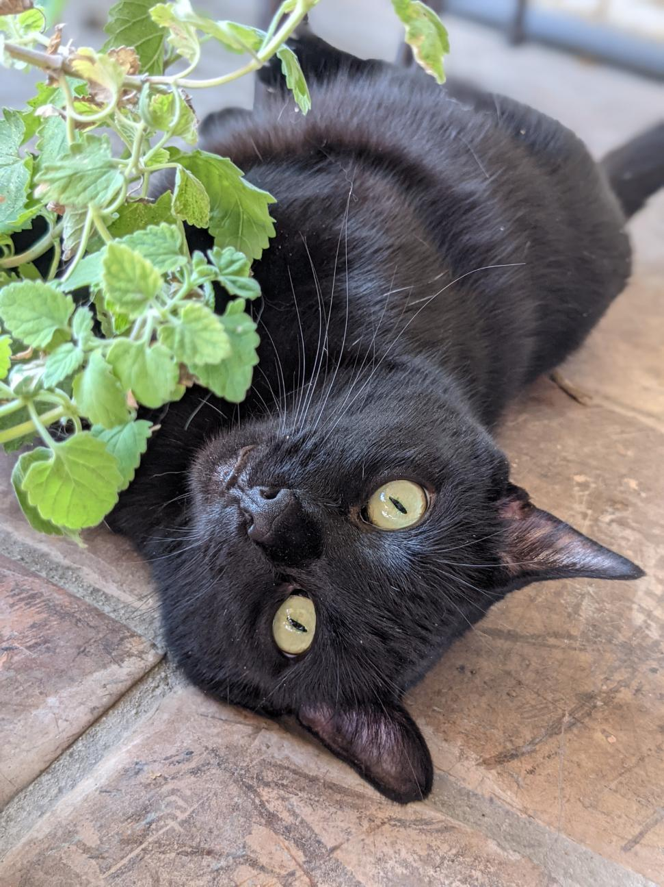

ABOUT US
BUILT BY CAT PEOPLE.
FOR CAT PEOPLE.
San Antonio's only dedicated cat litter service, built to serve our community.

Why I started Alamo Litter Patrol
Hi, I'm Shawn. This started when I somehow became the owner of six lovable cats over the span of five years. My household, it turns out, is a bit of a stray magnet.
Robin, Panchita, Paul, Bug, Klaus, and Minnie run the place here in San Antonio. Six cats means a lot of litter, and I've done plenty of scooping at 11pm wondering why nobody offered to take this off my plate.
One night it struck me how strange it was that I couldn't just hire someone for this. San Antonio has more than a dozen dog-poop scooping services. I went looking for the cat equivalent and counted exactly zero.
So I decided to build the thing I wished existed. Between my time in the Army and a career spent in roles where people are counting on me, I learned the same lesson again and again: show up, and do it right. That's the whole idea here. One job, done well. Weekly, on time, no fuss, so you can skip the scooping and just enjoy your cats.
Shawn OQZ, Founder
Our Code
- Show up. Same day, every week. If anything changes, you hear it from us first.
- Respect. Your home, your cat, your time. Quiet, quick, and never uninvited. Porch service always available.
- Integrity. Honest pricing, no contracts, no hidden fees. If we're not earning it, you can leave anytime, no fight and no penalty.
- Care. Premium litter, sanitized boxes, gentle handling. Your cat is the whole point.
- Accountability. Photo confirmation on every visit, and a real person on the other end of every email.
Let's Connect
Drop us your info. We'll be in touch within 24 hours.
BOOK NOW